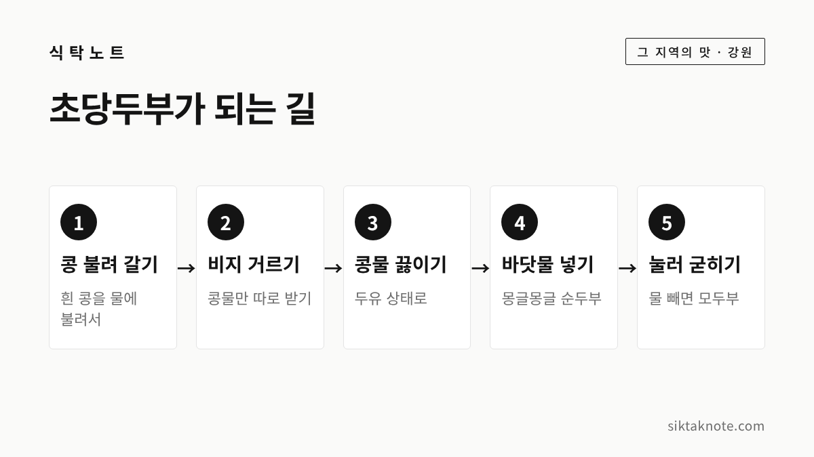

강릉 초당순두부 이야기 — 간수 대신 동해 바닷물로 굳힌 두부

3줄 요약
- 강릉 초당두부는 다른 지역과 달리 간수 대신 동해 바닷물로 콩물을 굳히는 게 특징입니다.
- 초당이라는 이름은 조선 중기 문인 허엽의 호에서 왔다는 이야기가 널리 알려져 있지만, 허엽이 두부를 처음 만들었다는 문헌 증거는 없다고 해요.
- 경포호 남쪽 초당동에 두부집이 모인 초당두부마을이 있고, 아침 일찍 가면 갓 만든 두부를 맛볼 수 있습니다.
행사 정보
- 위치
- 강원 강릉시 초당동 일대 (경포해수욕장에서 남쪽으로 조금 내려온 곳)
- 대표 음식
- 초당순두부, 모두부, 두부전골, 순두부짬뽕 등 (가게마다 다름)
- 가는 시간
- 아침에 갓 만든 두부를 내는 집이 많다고 알려져 있어요 (가게마다 다름)
- 함께 둘러볼 곳
- 허균·허난설헌 기념공원, 허난설헌 솔숲, 경포호
2026.10.09 확인 기준. 영업시간과 메뉴는 가게마다 다르고 자주 바뀝니다. 가시기 전에 가게별 안내를 한 번 확인해 주세요.
간수 대신 바닷물로 굳힌 두부
강릉에 가면 꼭 한 번은 먹게 되는 음식이 초당순두부인데요. 두부는 보통 콩물에 간수를 넣어 굳힙니다. 그런데 강릉 초당두부는 간수 대신 동해 바닷물을 씁니다. 한국민족문화대백과사전도 이 점을 강릉 초당두부의 가장 큰 특징으로 꼽고 있어요.
간수는 습기 먹은 소금에서 저절로 녹아 흘러나오는 짜고 쓴 물이에요. 예부터 두부를 만들 때 이 물로 콩물을 굳혀 왔습니다. 초당에서는 그 자리에 바닷물을 그대로 쓰는 거죠. 한국관광공사 여행 안내에서는 그래서 굉장히 부드럽고 고소하다고 소개하고 있어요.


'초당'이라는 이름, 허엽 이야기
'초당(草堂)'은 조선 중기 문인 허엽(1517~1580)의 호라고 알려져 있습니다. 허엽은 『홍길동전』을 쓴 허균과 시인 허난설헌의 아버지이기도 해요. 허엽이 강릉에 머물 때 바닷물을 간수로 써서 두부를 만들게 했고, 그 두부가 그의 호를 따 초당두부가 되었다는 이야기가 널리 퍼져 있습니다.
다만 이건 어디까지나 전해 오는 이야기인데요. 한국민족문화대백과사전은 허엽이 초당에서 바닷물로 두부를 만들기 시작해 이름이 붙었다는 설이 있지만, 이를 뒷받침하는 문헌 증거는 없다고 분명히 적고 있습니다. 같은 사전에는 『문종실록』에 이미 두부를 만들 때 바닷물이나 소금 녹인 물을 쓴다는 이야기가 기록되어 있다고도 나와요. 바닷물로 두부를 굳히는 방법 자체는 허엽보다 앞선 시대부터 알려져 있었던 셈입니다.
그러니 마을 이름이 허엽의 호에서 왔다는 건 널리 받아들여지는 이야기로, 허엽이 두부를 처음 만들었다는 대목은 전설로 들어 주시면 좋겠습니다.

동해 바닷물이라서 가능했던 일
바닷물로 콩물이 굳는 건 바닷물 속에 녹아 있는 마그네슘과 칼슘 덕분이에요. 간수의 주성분도 바로 이런 성분들이거든요. 한국민족문화대백과사전에 따르면 동해 바닷물은 서해나 남해에 비해 따로 졸이지 않아도 콩물을 두부로 굳힐 수 있을 만큼 마그네슘과 칼슘이 풍부하다고 합니다.
언론 보도에서는 강릉 앞바다가 천일염을 만들기 어려운 곳이라 소금에서 나오는 간수를 구하기도 쉽지 않았고, 그래서 바닷물을 천연 간수로 썼다는 풀이도 소개되는데요. 이 부분은 보도에 실린 이야기로 들어 주세요.

순두부와 모두부는 한 솥에서 나와요
한국민족문화대백과사전에 소개된 만드는 법을 쉽게 풀면 이렇습니다.
- 흰 콩을 물에 불려 곱게 갈아요.
- 비지를 걸러 내고 콩물만 받습니다.
- 콩물을 98~100℃로 끓여 두유 상태로 만들어요.
- 끓인 두유에 바닷물을 넣으면 몽글몽글 엉기면서 순두부가 됩니다.
- 이 순두부를 베 보자기를 깐 나무 상자에 붓고 20분쯤 눌러 물을 빼면 모두부가 돼요.
그러니까 순두부는 굳히다 만 두부가 아니라, 모두부가 되기 전 단계를 그대로 떠서 먹는 두부인 셈인데요. 사전에서도 시간을 제대로 맞추지 못하면 맛과 모양을 내기가 매우 까다롭다고 설명합니다. 그래서 집집마다 만드는 방법이 조금씩 다르다고 해요.

초당두부마을을 걸어 보면
초당두부마을은 경포해수욕장에서 남쪽으로 조금 내려온 초당동에 있습니다. 한국민족문화대백과사전은 초당마을이 길게는 천 년 넘게 사람이 살아온 곳이고, 1990년대 이후 아파트가 들어서고 순두부 가게가 늘면서 찾는 사람이 크게 늘었다고 소개해요.
언론 보도에 따르면 초당두부는 한국전쟁 뒤에 널리 퍼졌고, 1986년 이 마을에 두부를 메뉴로 내건 식당이 처음 문을 열었다고 합니다. 2023년 보도 당시 두부집이 25곳쯤이었다고 하니, 지금은 순두부 골목이라고 불러도 될 만큼 가게가 모여 있는데요. 2026년 6월에는 문화체육관광부의 'K-푸드로드' 사업에 강릉 초당두부가 뽑혀 3년 동안 30억 원을 들여 두부 축제와 시식 투어, 체험 프로그램 등을 꾸릴 계획이라고 보도되었습니다.
같은 보도에서 새벽부터 콩을 갈기 시작해 아침에 갓 만든 두부가 나온다고 소개하고 있어요. 따끈한 두부를 맛보고 싶다면 아침 시간에 들르시는 게 좋겠습니다.
이렇게 즐겨 보세요
초당두부마을에서는 가게마다 차림이 조금씩 다른데요. 한국관광공사 여행 안내와 언론 보도에서 확인한 음식을 모아 보면 이렇습니다.
- 초당순두부: 하얀 순두부를 그대로 떠 담아 내는 기본 차림이에요. 두부 본래의 맛을 느끼기에 가장 좋습니다.
- 모두부: 순두부를 눌러 물을 뺀 덩어리 두부입니다. 같은 콩물에서 나왔는데도 순두부와 식감이 확 달라요.
- 두부전골·모듬두부: 여럿이 함께 갔을 때 나눠 먹기 좋아요.
- 순두부짬뽕: 매콤한 짬뽕 국물에 순두부를 넣은 음식으로, 요즘 찾는 사람이 많다고 보도되었습니다.
- 순두부젤라또: 두부의 고소한 맛을 살린 아이스크림인데요. 젊은 여행객들 사이에서 꼭 들르는 코스가 되었다고 언론에 소개되었어요.
처음 가신다면 하얀 순두부부터 드셔 보시길 권합니다. 양념을 많이 넣기 전에 한 숟가락 그대로 떠 보면 바닷물로 굳힌 두부 맛이 어떤지 바로 알 수 있거든요.
두부 먹고 나서 걸어 볼 곳
초당두부마을 가까이에는 허균·허난설헌 기념공원과 허난설헌 생가터, 그 둘레의 솔숲이 있습니다. 한국관광공사 코스 안내에서도 두부를 먹고 허난설헌 생가터와 솔숲, 경포호를 걸어 보라고 권하는데요. 이름의 주인공으로 알려진 허엽의 자녀들 이야기가 바로 옆에 있으니, 한 끼 식사가 작은 역사 산책으로 이어집니다.
자주 묻는 질문
초당순두부와 일반 순두부는 뭐가 다른가요? 가장 큰 차이는 굳히는 물이에요. 보통 두부는 간수나 응고제로 굳히는데, 초당두부는 간수 대신 동해 바닷물을 씁니다.
사 온 초당두부는 어떻게 보관하나요? 순두부는 아주 부드러워서 오래 두기 어렵습니다. 남은 모두부는 밀폐 용기에 담고 깨끗한 물을 잠기도록 부어 냉장하는 게 좋아요. 자세한 방법은 두부 보관법에 정리해 두었습니다.
10월에 강릉에 가신다면 강릉커피축제 하루 코스도 함께 보세요. 아침에 초당순두부로 속을 채우고 안목 커피거리로 넘어가는 동선을 담아 두었는데요. 따끈한 순두부 한 그릇으로 시작하는 강릉 여행, 올가을에 한 번 해 보시면 좋겠습니다.